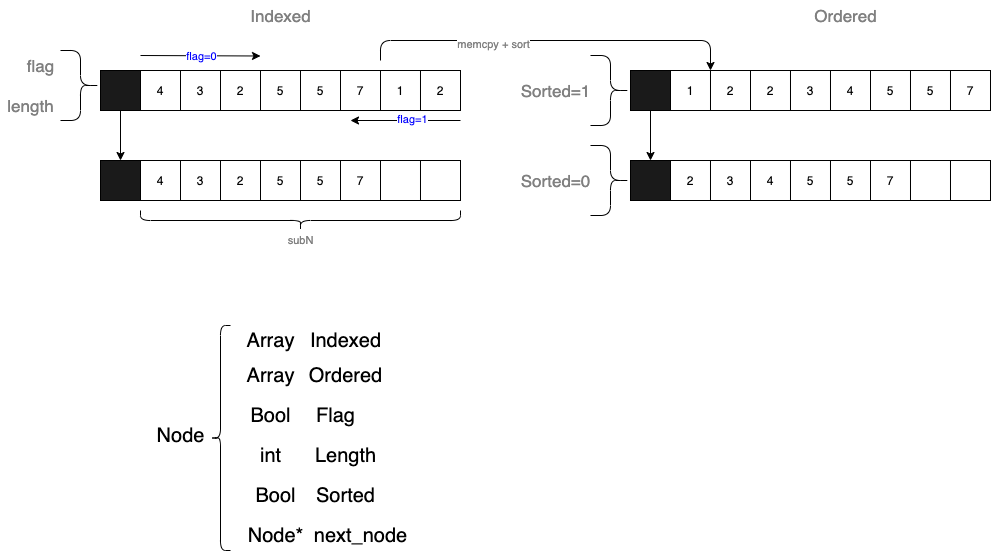
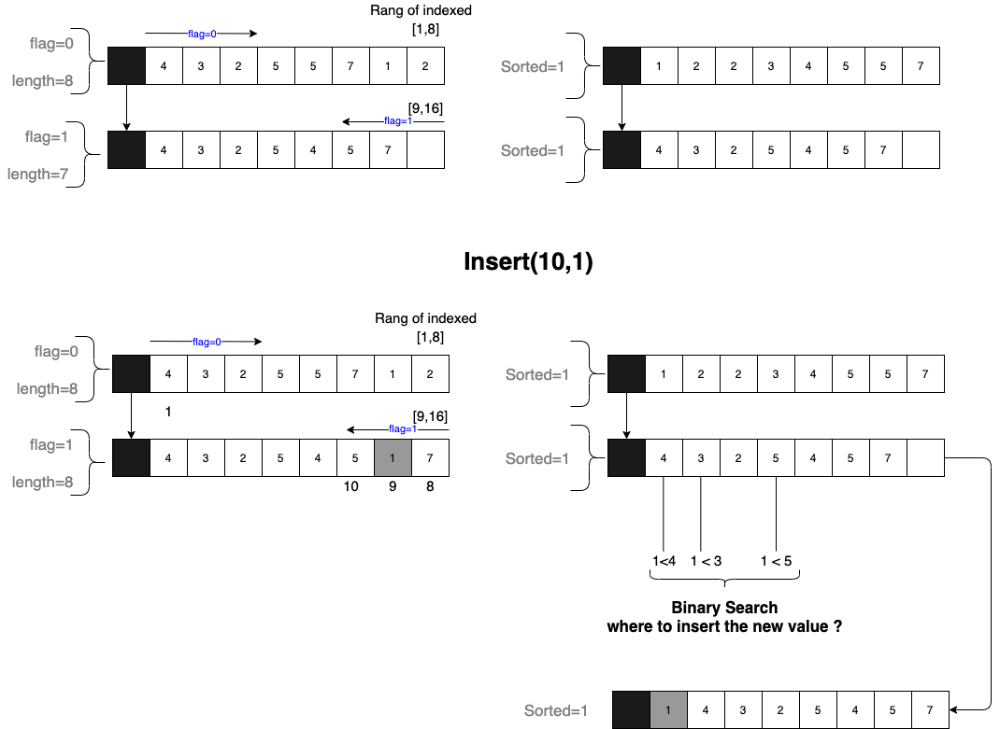
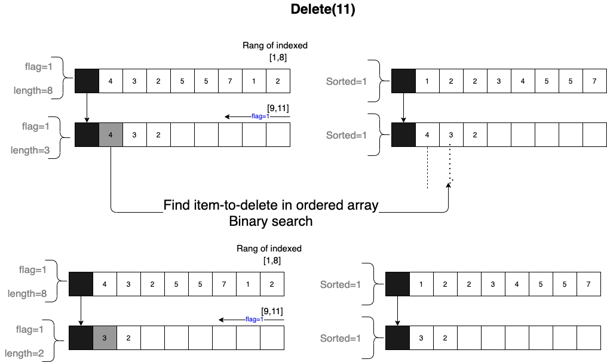
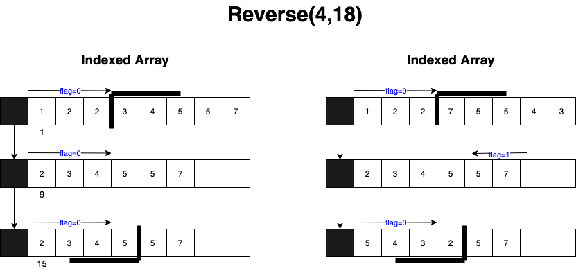
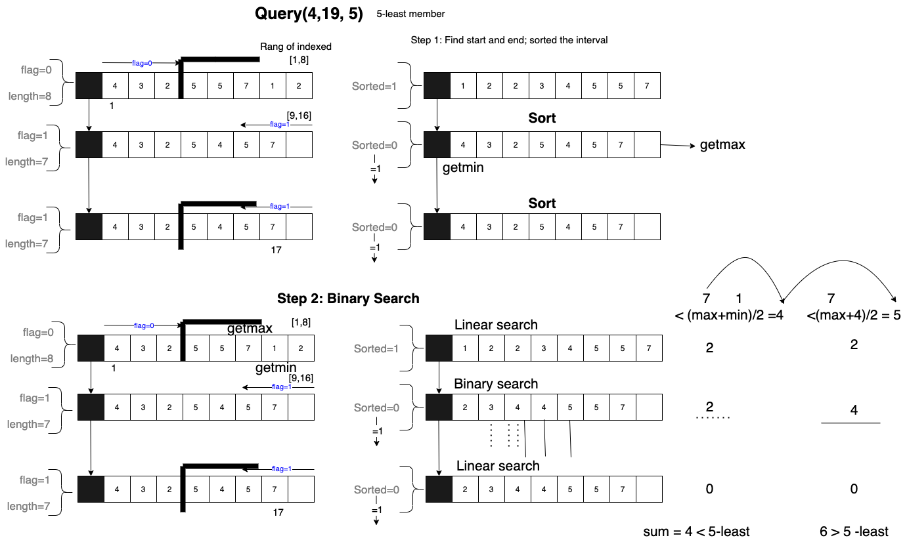

K-least element
Iinked Array

- 分為
- 排好先後的數列 (indexed)
- sorted 的數列 (ordered)
- 每個 Unrolled linked list 的參數
flag:0: 從0 -> N-11: 從N-1 -> 0
length:- array 中的資料量 (<
subN)
- array 中的資料量 (<
Insert
Insertion with unordered / sufficient space

- Procedures
- Find subarray
- Find the i th element
- Insert value into indexed array
- Append value into unsorted array
Insertion with Ordered / sufficient space

Insertion with Orderd / insufficient space

Deletion
Deletion with remaining data

Deletion with garbage collection

Reverse

Query

Binary Search Algorithm
function binary_search(A, n, T) is
L := 0
R := n − 1
while L ≤ R do
m := floor((L + R) / 2)
if A[m] < T then
L := m + 1
else if A[m] > T then
R := m − 1
else:
return m
return unsuccessful
Query
Copy an array
void *memcpy(void *dest, const void *src, size_t n);
Find i th element
Unrolled linked list
Skip List

Ref: GreekforGeek
Reverse Linked list
Binary search algorithm when finding the k-least element
https://www.geeksforgeeks.org/kth-smallest-element-in-a-subarray/
First strictly greater element in sorted array
int next(int arr[], int target, int end)
{
int start = 0;
int ans = -1;
while (start <= end)
{
int mid = (start + end) / 2;
// Move to right side if target is
// greater.
if (arr[mid] <= target)
start = mid + 1;
// Move left side.
else
{
ans = mid;
end = mid - 1;
}
}
return ans;
- Ref: GreeekforGeek
Insert an element into sorted array
- Ref: [GreekforGeek]
Quick Sort
Ref: Quick sort in C. [link]